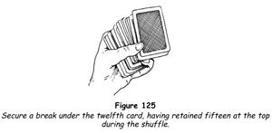
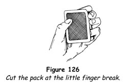

In this chapter we shall give you a number of tricks requiring an arrangement of the cards that will bring about a result you desire. These arrangements must be made without the knowledge of the audience, and this may be accomplished in one of these ways.
1. You may prepare the arrangement before you perform, place the cards in their case and offer the trick as your first feat.
2. You may place the arrangement in your pocket before the performance. The absence of six or seven cards, or even a dozen, will rarely be noticed. When you need the arrangement, palm the cards and secretly add them to the pack.
3. You may arrange the cards openly between tricks. You will already have seen how this is done in the feat described as Obliging Aces). The general rule is that when you are making an arrangement openly you must do it boldly. The moment your manner becomes furtive you will create suspicion.
Between impromptu tricks there are always a few moments of laughter and comment, and you can make your arrangement at this time if you do it as you talk, dividing your attention between the cards and those about you. You must remember that, although you know you are making an arrangement and may at first be self-conscious, those about you do not know what you are doing. You can let them think you are searching for the joker as you shift cards about, or you need offer no explanation at all.
Some of our most adept card experts make arrangement with the utmost sangfroid. Their manner is so disarming that, though they are seen arranging the cards, their audiences never connect this with the trick that follows.
4. You may arrange the cards during the course of the trick that precedes the one requiring the arrangement. Let us say that you are performing a key location trick and have found the correct card and are prepared to reveal it. Instead of doing so immediately, you pretend perplexity and run through the cards, occasionally removing one and returning it, then moving a few cards here and there, as if in search of the card. Actually you are arranging the cards in readiness for use.
Most short arrangements can be made in a matter of seconds. With the cards properly arranged, you bring the trick in hand to its proper conclusion and are ready to perform the feat requiring the arrangement.
After the arrangement has been made and before the trick is introduced, always shuffle the cards thoroughly by the overhand method, controlling the arrangement in the manner that has been fully described.
TRICKS WITH ARRANGEMENTS
The Selective Touch
'Jimmy Valentine' made popular the notion that one's fingertips could be made so sensitive that they would acquire abnormal qualities, and this idea was seized on to dress the presentation of a number of conjuring tricks. In this trick a shuffled pack is placed in your pocket, and the suit and value of a chosen card are matched by removing cards from the pack, presumably because of the sensitivity of the fingertips.
In preparation, secretly place the ace of clubs, two of hearts, four of spades and eight of diamonds with the backs outermost in your upper right waistcoat pocket. The eight of diamonds is nearest your body.
1. Have someone shuffle the deck, remove any card, note it and place it face upwards on the table.
2. Open your jacket and have him place the remainder of the pack in your inner jacket pocket. See that he places it back outermost.
3. Discourse on the sensitivity of your fingertips. 'We all know that it is possible to read raised figures with the fingertips, but it is not so generally known that it is possible to read printing in the same manner,' you say. 'I frankly admit that I am unable to read fine print, such as that found in a magazine or newspaper; but I can read the large indexes of the cards, both the number and the suit.'
4. 'I'll try it with your card.' Turn towards your left, open your jacket a little with your right hand and slide your left hand into the inner jacket pocket, moving the fingers so that the movement shows through the cloth. Remove your hand from the pocket and remove one of the cards from your waistcoat pocket, the suit of which matches that of the spectator's card. Knowing the sequence of the cards makes this an easy matter. Bring it out as if from your inner jacket pocket, saying, 'Here is a card of the same suit!'
5. Again reach under the jacket. 'Now to see if I can match the value of your card.' Remove your hand and rub it briskly on your right jacket sleeve, then plunge it under the jacket again. Fumble about in the inner jacket pocket, finally removing the card or cards necessary to match the value of the card - for example, for an ace bring forth the ace; for a three, the ace and two; for a four, the ace and three; and so on. Any number can be matched with the four cards - the jack, queen and king being considered as eleven, twelve and thirteen.
If the suit card you have already removed is needed to match the value, remove the other card or cards and place these on the suit card, arriving at the proper value in this manner. For example, let us say that the spectator has the seven of spades. Bring forth the four of spades and show it, a spade, as the suit card. Now remove the ace and two, placing them beside the four, pointing out that the three values total seven.
A little experiment will show you that any card can be matched by using the four cards. The trick is simple but when given a good presentation it is, like other simple things, very entertaining.
A Future in Cards
This feat is made possible by a simple arrangement. A person thinks of a card and you instantly produce it, thus proving by conjuror's logic that you have read his mind.
1. Take a shuffled pack and spread the top cards as if to have one chosen. Secretly count the cards and, when you have spread fifteen, cut these off the pack, saying that instead of having one selected, you will do a much more difficult trick.
2. Place the remainder of the pack to one side and remove any club, any heart, any spade and any two diamonds from the fifteen - keeping them in this order, which can be remembered easily if you think of the consonants in the word CHaSeD. Hold the five cards in your right hand, retaining the other ten cards in your left hand.
3. 'I promised you the trick would be a difficult one,' you say. 'I do not want you to touch a card or remove it from the pack. Instead, please think - just think - of one of these cards.' Spread the five cards and remember the name of the second diamond, which will be the fifth card in the fan. Let us say it is the ace.
4. Drop the five cards on the pack and place the ten in your left hand on top of all. 'I shall prove to you that I can read your mind.' Shuffle the cards without disturbing the position of the first fifteen cards, then take five cards from the top and push them into the centre. Remove five from the bottom and push these also into the centre. Finally, remove five more cards from the top and thrust these into the centre of the pack. As a result, the five cards from which the choice was made are now at the top of the pack.
5. Place the pack in your right jacket pocket. 'Kindly name your card and I will offer my proof,' you say, thrusting your hand into your pocket. When the card is named, instantly secure the proper card and withdraw it from your pocket, saying, 'I was sure that was your card. Here it is!'
In finding the proper card you are guided by the CHaSeD formula. If a card named is a club, you withdraw the top card; if a heart, the second card; if a spade, the third; if a diamond, the fourth. But if the diamond named is the one the name you memorised (in this illustration, the ace) you remove the fifth card.
Jacks Wild
Professing to demonstrate a gambler's sleight, you repeatedly deal three jacks to a spectator. Offering to deal him the four jacks, you deal him four aces instead.
Secretly take the four aces and alternate them with four indifferent cards, placing the aces first, third, fifth and seventh. Place this set-up on four indifferent cards and place all face upwards at the bottom of the pack.
Now arrange the jacks so that they are in the following order from the top of the deck down: jack of spades, jack of diamonds, jack of clubs, any card, jack of hearts, and so on.
1. Bring the conversation around to gamblers' sleights, explaining that although you are not an authority on matters of this kind nevertheless you have been shown the sleight known as the second deal and that you will demonstrate it.
2. Take the pack, saying, 'See if you can catch me when I deal the second card.' Deal the top card to a spectator, the next to yourself, the third to the spectator, the fourth to yourself, the fifth to the spectator. Slide your next card, the sixth, under the two before you, pick up all three and replace them on the deck.
'Did you see the second deal?' you ask. 'I gave you three jacks.' Turn his cards face up on the table, showing two black jacks on top of a red jack. Slide the top black jack under the other two, pick up all three and place them face downwards on the pack.
3. 'I'll do it again.' Repeat the deal and he will again have two black jacks and a red jack. Since the red jack is below the two black jacks each time, it is not noticed that it is the other red jack. Again slide the top black jack under the other two and replace them face down on the pack.
4. 'Listen and you'll hear the second card as it slides from under the top card,' you suggest. 'It makes a hissing sound.' Repeat the deal once more. Show that the spectator has the three jacks, pick them up and drop them face downwards on the pack.
5. 'They tell me it takes twenty years to develop a good second deal,' you comment. Drop both hands to your sides and grasp your chair, hitching it forwards as if to make yourself more comfortable. Under cover of this natural action, turn the pack over with your left thumb. Bring it up into view, the reversed cards uppermost.
6. 'I'll deal a regular poker hand this time,' you continue, 'and I'll try to give you all four jacks.' Deal the cards in the ordinary manner. When he turns his cards, he finds the four aces!
'Some day,' you say, 'I'm going to find out how the gamblers do that!'
While everyone's attention is centred on the four aces, drop your hands under the table top and turn over the remaining reversed cards so that the pack is in its regular condition.
Think Stop
An arrangement of the cards in one suit is used in this effect.
Beforehand, arrange the thirteen cards of the club suit in numerical order by placing the ace on the table, face downwards, and on it placing the two, then the three, and so on up to the king. The king will therefore be the top card of the packet, and the ace will be the face card. Place this packet on the bottom of the deck.
1. False shuffle the deck, using the overhand false shuffle, keeping the arranged cards on the bottom. Spreading the upper three-quarters of the deck, invite a spectator to select a card.
2. Square the deck and place it on the table. Have the spectator show his card to the onlookers, and announce that you will have the card replaced in such a way that all must be convinced that it is lost in the deck.
3. Invite the spectator to place his card on top of the pack and then cut and square the deck himself. This done, have him cut a second time and complete the cut.
4. Take the deck and place it on your left palm, extend your left fingers, and invite the spectator to cut again and place the cut on your fingers. Complete the cut yourself, lift the deck and replace it on the left palm. By holding your hand rather high you can secretly glimpse the bottom card as you replace it on the palm of your left hand. If the bottom card is a club, square the deck and place it on the spectator's left hand. If the bottom card is not a club, simply repeat the cutting until a club appears on the bottom.
5. Stress the fact that the repeated cuts make it impossible for anyone to have any conception of the position in which the chosen card lies in the deck. Let us suppose that after several cuts you glimpse the seven of clubs at the bottom of the deck. Square the deck and place it on the spectator's outstretched left hand. Announce that by long practice you are able to estimate exactly how many cards have been cut each time and that therefore you are able to tell exactly where the chosen card lies from the top of the pack. 'It is now,' you assert confidently, 'exactly twenty-one cards from the top.'
6. 'However,' you continue, 'there's no magic about that. Simply a matter of keen observation. Anyone can do it with practice. I propose to do something really magical. I will count backwards from twenty-one, mentally, and you will call “Stop” at any time you please. The chosen card will rise in the deck as I count and you will then find the card at the number I have arrived at. I am counting now, so say “Stop” whenever you please.' When the spectator calls, assert that you had reached the number seven, always naming the value of the club at the bottom of the pack as your number. The jack, queen and king are valued at eleven, twelve and thirteen respectively.
7. Have the spectator deal six cards on to your hand, and then name his card. The seventh card is turned face up and it is the chosen card!
Note that if you count the cards dealt on to your hand, reversing their order under pretence of verifying the number dealt, they will be back in their original sequence. By placing them on the bottom of the deck you can repeat the trick or use the set-up for the following feat.
Deal Away
There is nothing more surprising to the layman than to be allowed to find his own selected card under conditions over which he seems to have complete control. That is what seems to happen in this self-working feat.
1. Having shown the trick we have just described, and having replaced the dealt packet at the bottom after reversing its order - so that the arrangement of clubs at the bottom runs from ace to king, the ace being the face card - say, 'Perhaps you are unwilling to believe that there is such a thing as mental control. I can assure you that there is and that one person can dominate the thoughts of another. For instance, I am now thinking of one of the cards, and I am projecting my thought to you. I want you to make your mind a complete blank and then name the first card that comes to mind. The card will be the card I am projecting to you. Are you ready? All right - quickly! Name a card!'
'The seven of hearts.'
'Right!' you exclaim. No matter what card he names, you tell him he has named the correct card. 'Why, it's marvellous!' Look quizzically at him and everyone will be amused at your swindle.
2. After a moment, say, 'Ah, you don't believe I projected my card to you. Very well, I'll offer you proof that there is such a thing as mental control. Here, please take a card.' Spread the pack and have one removed from the upper three-quarters. Square the pack and place it on the table; have the card shown to all and then placed on top of the pack, after which you invite the spectator to make one complete cut, thus burying his card at the middle, with the arrangement of clubs directly above it.
3. Pick up the pack and make an overhand false shuffle, which will not disturb the order of the cards. 'I give you my word of honour that I do not know the position of your card in the pack at this moment,' you say. This is true. 'But I do not need to, because I am not going to find your card. You're going to find it yourself.' Hand him the pack. 'Please deal cards face downwards on the table, ten or twelve or fifteen, as many as you like. When you feel an impulse to stop the deal, stop.'
4. The spectator deals a number of cards and stops the deal. 'Kindly turn over the last card you dealt,' you say. Let us assume that it is a four of diamonds. 'You stopped on a four-spot. Very well, deal four cards.' He deals four cards and you have him turn the last card face upwards as before. It is, say, the eight of clubs. You then know that, if he deals eight cards and turns the last card dealt, it will be his chosen card. In other words, sooner or later he will turn a card of the club suit face upwards, and whatever its value, if he deals down that many cards more, the last card dealt will be his card.
5. You therefore announce, 'You are being guided as inevitably as if by destiny itself. You have turned an eight-spot. Deal eight cards.' He does so. 'Now name your card.' He does so. 'Look at the last card you dealt.' He turns it face upwards and it is his chosen card!
Pick up all the cards and idly give them a riffle shuffle, thus removing any possible clues to the feat. As in the preceding trick, jacks, queens and kings are valued at eleven, twelve and thirteen respectively.
The Educated Cards
In this excellent trick, a spectator finds his own card and has not the faintest idea as to how he found it.
First you must secretly place an arrangement at the top of the pack. Run through the pack and place any nine, seven, five, three and ace at the bottom in sequence, the ace being the face card. Turn the deck face downwards and grasp it at its ends between the left thumb and fingers, the hand being arched over the pack.
With the right thumb at the top and the fingers at the bottom of the pack, draw off the top and bottom cards and drop them on the table. Repeat this six times. You will have a pile of twelve cards which run, from the top down, x, x, x, 9, x, 7, x, 5, x, 3, x A.
Push this packet to one side without disturbing the sequence of the cards, and draw off six more sets of two cards in the same way as before. Glance up, saying, 'Ever seen this before? It's the faro shuffle, the only shuffle the faro dealers use.' Drop the pack upon this pile you have just dealt, then carelessly scoop up the first pile and place it on the deck. Thus you have placed your arrangement of twelve cards at the top.
1. Shuffle the deck, retaining the first fifteen cards at the top, then place the pack in your left hand and spread it as if to have a card removed, secretly counting the first twelve cards (figure 125). Square the deck as if you had changed your mind, and secure a little finger break under the twelfth card in preparation for a twelve-down riffle control.

Riffle the cards upwards with the right hand, saying, 'Take any card you like. I'll riffle slowly so that you have a free choice. Please show your card to everyone.' Split the pack at the twelfth card, have the drawn card replaced and drop the twelve cards on it, thus placing the chosen card thirteenth from the top. This is the twelve-down riffle control.
2. Undercut the lower half, injog the first card and shuffle off. Undercut at the injog, forming a break and shuffle off to the break. Throw the cards under the break on top, thus returning the arrangement and chosen card to the top. As you do this, say, 'Let me show you how simple it is to find your card, even after a genuine shuffle. In fact, to show you how simple it is, I'll let you find the card yourself.'
3. Take the pack face downwards in your left hand and begin to deal cards slowly face upwards on the table. 'Tell me when to stop the deal.' The first three cards you deal are indifferent and every other card thereafter is one of your arrangement. When the command to stop the deal comes, glance at the card face upwards on the table. If it is one of the cards of your arrangement - a nine, seven, five, three or ace - point to it, saying, 'You stopped me on a five [or whatever it is] so I'll deal five cards.' Deal the five cards, pushing the last card dealt to one side. 'This is the card at your number,' you point out. 'What was the name of your card?' He tells you and when you turn the card you placed to one side, it is the spectator's card.
If, however, he stops the deal on an indifferent card, you remove the next card from the top of the pack, saying, 'You stopped the deal on this card.' Whatever its value, deal that many more cards and the last one will be the chosen card.
The trick has an impressive effect out of all proportion to the simple means involved.
Reds and Blacks
The secret of this trick is known to many people. However, it is used by many conjurors of the first rank, who present it with such polish that it deceives even those who know the method.
Before presenting the trick, place all the red cards at the top of the pack, the black cards at the bottom. Turn the first of the black cards face upwards in the deck.
1. False shuffle the cards, using the overhand false shuffle. Spread the cards and notice that one card is 'accidentally' reversed. Run all the cards above the reversed card into the right hand, turn the reversed card face downwards, and reassemble the pack, inserting the tip of your little finger between the two packets as you do so.
2. Riffle the outer end of the pack with the right hand; apparently cut the pack haphazardly but actually cut at the little finger break (figure 126). Place all the red cards at your right, the black cards at your left.

3. Turn your back and instruct someone to cut either packet, remove one card and replace the cut. Have him look at and remember the card, then thrust it in the centre of the other packet, finally shuffling this packet.
4. Next have him cut the first packet, place the shuffled packet on the lower portion of the cut, and replace the upper portion on all.
5. Turn around, take the deck and hold it with its face towards yourself so that no one else can see the cards. Pretend to search for the chosen card, but actually cut the pack to bring all the reds and blacks together for a repetition of the trick if this seems desirable.
6. Finally remove the spectator's card. It will be the only black card among the reds, or vice versa. Have the card named and show that you hold it in your hand.
Repeat the trick if this seems warranted. If not, shuffle the deck, thus destroying all clues to the ways and means.